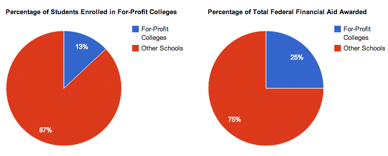
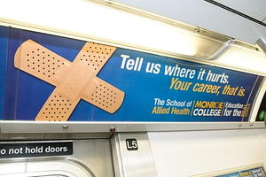
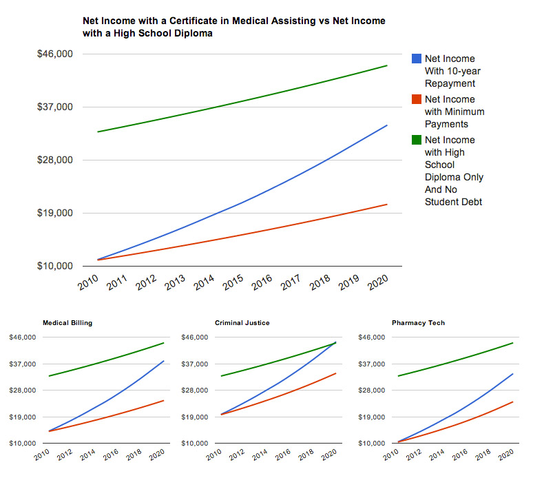

Amanda Navarre was not about to let me panic. As an enrollment advisor at Ross Medical Education Center in Davison, MI, she had seen this same reaction before—a look of dread welling up in prospective students sitting across the table from her after she showed them the total cost of tuition for their program of choice at Ross. She had circled a number on the glossy brochure I held in my hands—$15,740 for a 10-month certificate in Medical Billing and Coding.
“That number will change, so don’t let that freak you out,” she reassured me. Though everything about this situation seemed overwhelming, Navarre’s office was set to soothe: soft music was playing, framed family photos smiled up at me from her desk, a candle that smelled like my parent’s house around the holidays flickered on a shelf. It felt like someone’s very contented home, and made me almost forget that I was at a school in a strip mall. I remembered her saying, early on in our conversation, “We want you to be comfortable here.” It was working. She went on to remind me that there were a lot of options for paying for school: free Pell Grants from the government, and government loans, too. “So it’s not something you have to take out cash-wise.”
Part I — The 89%
The Ross in Davison, and its 28 sister schools around the midwest, are part of the rapidly growing for-profit college industry in the U.S. that now educates 13% of America’s higher-education students. Ross runs a series of certificate programs for medical support careers—medical, dental and veterinary assistant programs, along with medical billing and coding—aimed at fast-tracking non-traditional students through training and into the workforce.
Every one of their programs runs $15,000 or more. Most of them are, in large part, paid for by taxpayer funded government student aid.
Though Ross Medical Education Center is just a small player in the multi-billion dollar for-profit education industry, its business model is nearly identical to that of industry giants ITT Education Services, Kaplan, The Apollo Group (which owns University of Phoenix), and Career Education Corporation—where Ross’ current CEO, George Grayeb, spent several years as Senior Vice President of Health Strategic Business Unit. (Grayeb left CEC, and his 7-figure salary, in 2011 to pursue “other opportunities.”) The formula is both crass and simple: provide fast education with low overhead at private school costs to people running out of options—and get the government to pay for it.
According to a 2012 investigation into the industry commissioned by Iowa Senator Tom Harkin, 96% of students starting at for-profit colleges take out a government-backed Stafford Loan (compared to just 13% of students in comparable programs at community colleges). For-profit colleges, which recruit heavily in low-income areas, receive disproportionate amounts of Pell Grants, and half of all of the Department of Defense tuition assistance for veterans. In fact, nearly a quarter of all available federal student aid—around $32 billion dollars—gets funneled into for-profit colleges every year. And for most of these schools, it is their primary source of income.

Though regulations exist that restrict a school from making more than 90% of its profit from federal aid, the vast majority of schools hover in the 85-90% range; most at the high end of that bracket. In order to ensure at least 10% of their revenue is coming from elsewhere, schools hike tuition prices above the $12,500 maximum for a federal Stafford Loan, forcing students to pay out of pocket or through private lenders for the balance. Ross’ programs hover in the $15000 range, but some certificate or associate degrees from for-profit colleges can cost as much as $35000.
The shocking thing is, most of those tax dollars aren’t even going towards educating students; instead, they’re going towards recruiting them. Because students drop out at an alarming rate, and those who manage to graduate do so in a compressed timeline, new students have to be brought in all the time to keep revenue up. For-profit schools hire nearly ten times the number of recruiters as they do career services advisers, and spend $4.2 billion, or 22.7% of their income on marketing, compared to just 17.2% on instruction. The model only works if more and more students sign up.
Senator Harkin’s report makes it clear that the pressure to recruit as many students as possible starts at the top of the for-profit education business model. “Investors, whether public or private, demand revenue growth. Revenue growth requires enrolling a steady stream of students. Thus, executives, unless there are balancing priorities, are accountable for bringing in as many students as possible.”
Part II — The Funnel of Pain

So how do you get someone to sign up for a $20,000 certificate program at a no-name college? It’s all in the sales techniques.
Most recruiters call themselves admissions or enrollment advisors, but function as nothing more than a sales force. Up until 2011, admissions reps could receive incentive pay for the number of new students they enrolled; though that has since been eliminated, most reps still have to meet weekly and monthly quotas, or risk discipline or termination. The combination of a highly motivated sales force, and a very desperate pool of potential recruits opens up a world of sales techniques that are far from what you’d imagine a visit to a college’s admissions office to be.
That was what brought me to Amanda Navarre’s office that day. It was the fifth such admissions interview I’d had that week, and the 43rd in my career as an auditor for a private company hired by Ross and several other education corporations to audit the practices of their admissions reps. I was there not as Erin Brown—a college-educated, New York-based writer who needed a job for the summer before starting grad school—but as Clare Kilfoyle—a frazzled young mother from a suburb of Flint, MI, who got married straight out of high school, and whose husband was getting laid off at the end of the month. Earlier that morning I had been someone else entirely, at the campus in Port Huron—a nanny who decided she wanted to become a nurse—and would be a grocery checker supporting her younger brother after their mom passed away from cancer, later that same afternoon in Flint. Over the course of nine months, I audited 64 schools from 9 different corporations in 17 states around the country. It was horrific.
Senator Harkin’s report calls out for-profit colleges for “disturbing” and “ethically questionable” recruitment tactics that prey on at-risk populations, like single mothers, veterans, and low-income individuals. Recruiting staff are trained to find a prospective student’s weaknesses, their points of pain, and push on them as a way of making prospectives insecure—before offering a college degree as the solution to all their problems. Training manuals for ITT Tech admissions recruiters teach something called the “Funnel of Pain,” which is designed to break a student down completely before they even begin a conversation about the school.
My job, which was essentially one part improv and one part espionage, required me to pose as a prospective student and go through the admissions process, checking for compliance with government-mandated disclosure of things like tuition costs, placement rates, and job outlook. Think: secret shopper with a complicated life story. This involved a one-on-one interview with a rep, a campus tour, an admissions exam (usually the Wonderlic test), and, if I was lucky, a meeting with financial aid. It gave me a first-hand look at the Funnel of Pain, and a handful of other often-illegal techniques reps used to mislead me into signing up for a program.
It usually started with a phone call, either coming from me or in response to a request for information I submitted online. The calls were never more than four or five minutes; it’s standard procedure for recruiters to give away as little information as possible on the phone. I was routinely urged to come in that same day, a way of creating a sense of urgency, and bring my kids, or my husband, or my parents along with me. The recruiter reassured me that all my questions would be answered when I arrived.
I filled out a questionnaire in the lobby of each school, designed to give the reps a quick set of emotional ammunition. What were three goals I would like to accomplish this year? What is the one thing I wish I could change about my life? Who is my biggest cheerleader? My biggest critic? Who will be impacted by your decision to go back to school?
A representative at Virginia College in Mobile, Alabama, took a keen interest in finding out what I meant when I mentioned I hadn’t gone to college because “I was in a bad way” in my early twenties. Had I fallen in with the wrong crowd? Gotten into drugs? Been in jail? (That last one she likely wanted to know because it could impact my ability to get financial aid, not because she particularly cared about my rough life.) The recruiter at Ross in Flint wanted to hear more about my mother’s slow decline before giving in to cancer the following year, and how I was coping with supporting my younger brother? How did it make me feel to know I couldn’t provide everything for him? What would it mean to me if I could show him a good example by going to college?
At the Anthem Career College in Memphis Tennessee, the recruiter I met with was visibly agitated that I was coming in to get information about the pharmacy tech program before taking the GED test the following week. Admissions reps cannot enroll a student without a GED, even if their start date would be after their GED test date, and she made it clear I was wasting her time. She belittled me repeatedly for trying to “put the cart before the horse” or “bake a birthday cake without a mix.” On the tour of the campus she introduced me to each instructor, administrator, or student we met as “This is miss Lee. She doesn’t have a high school diploma or GED.” I was mortified and ashamed, even though I knew that I actually possessed a degree from a great college and had just received my acceptance email from Columbia Journalism School in the parking lot before I walked in. If the emotions were that overwhelming for me, I could hardly imagine what that shame would feel like for someone who was actually in that situation.
At one point, she asked me to stand in front of a full-length mirror that had a plaque above it that read “Would I Hire This Person?” (a similar mirror can be found in every Anthem campus) and answer the question aloud. She said, “If you look in the mirror and there’s something there you don’t like, guess what? We don’t like it either.” I felt so uncomfortable I had to break the tension with a little joke. “You mean you don’t like my inner thighs?”
In each interview I could sense the recruiters questions directed at sizing me up. They asked about my current job, or if I had saved up anything for college, trying to determine if I would qualify for financial aid, and if not, if I had the income to pay the balance myself. They asked about daycare options or work commitments to determine if I might be likely to skip class regularly or drop out—something that hurt their numbers needed for accreditation. They looked for the one detail in my story that would be their focus, and they drove that home.
After fifteen minutes or so of talk about my life and my pain, the admissions reps would dive into their pitch, which is where the real trouble began. Back at Ross in Davison, Andrea was regaling me with stats about the job outlook and salary for a medical biller, telling me that once ObamaCare went into effect “The industry is going to triple in numbers.”
When I asked her if a lot of students found employment after graduation, she excitedly told me about their Career Services department. “You will get a lifetime career personalized job placement guarantee from us,” she explained. “For the rest of your life we are going to make sure you're working. Say your company shuts down, come back here we will make get you placed with a new job, we will get you hired again…so no worries about that"
Never mind the logic of a lifetime guarantee from a college in a strip mall. Ross can’t, and doesn’t promise employment to any of its students, yet here she was, promising it to me.
I had recruiters grossly inflate the local demand for medical assistants, or massage therapists, or people with criminal justice degrees. They’d say the market was hungry for talented people, just like me, all I needed were the credentials—one of their favorite buzzwords—and after I had those letters behind my name, I could go anywhere. One rep at a school in Fort Wayne, IN, told me she heard a hiring manager complain there weren’t enough qualified people to fill all the open positions at a local hospital, which, I later discovered, only hires internal candidates.
Credits from for-profit colleges, most of which are accredited by national accrediting councils like the Accrediting Council of Independent Colleges and Schools, or the Accrediting Bureau of Health Education Schools, almost universally cannot be transferred out of the school, and rarely count towards a further degree. This is almost never mentioned in admissions interviews, even when the prospect of further education comes up. A recruiter in New Jersey side-stepped my question about continuing on to get my LPN after I finished my medical assistant certificate, saying “It’s up to the other school what credits they’ll take.” It was rarely made clear that if I wanted to get an associates or bachelors degree, something that might actually improve my earning potential, I would be starting from scratch.
For most of the people who come looking for an education at a for-profit college, job prospects are already dim. Many hold minimum wage jobs, or are on public assistance of some sort. So for a representative to say, “You will be hired. You will have a career. You will have a job with good hours and health insurance at the end of this...Isn’t that what you want for yourself?” it seems almost impossible to refuse.
Part III —“That number will change”
Two of the most common, and most egregious, tactics used to motivate sign-ups are misleading salary expectations, and over-emphasizing financial aid. The two go hand-in-hand, giving a potential student the idea that this education will increase their earning power, and that it won’t actually cost them as much as it seems. Tragically for most, this couldn’t be farther from the truth.
In each interview, a recruiter showed me a chart with data from the Bureau of Labor and Statistics—which they named in full, every time, for impact—that lists median earnings in a particular career field, and told me that that was just the beginning of my earning power. When asked about local salaries, almost categorically recruiters told me I could look that up on the BLS website on my own. I tried this once, and, after a half hour of earnest looking through thick governmental reports and fact sheets about oral surgeons, gave up without a clue as to what a dental assistant gets paid in Baton Rouge.
Time after time I was told I could expect salaries as much as $50k higher than reality. A Virginia College representative in Birmingham assured me that medical assistants could pull down as much as $80 thousand a year; another in Shreveport gave an equally rosy outlook for dental assistants. A recruiter at Long Island Beauty School all but promised me six figures, “which could be tax-free if you do it in cash” in the first year after I got my license if I learned to do fuseable weaves. Amanda told me her sister was a Ross graduate, currently making $26 an hour billing at a doctor’s office, with great hours. Though that may have been true, the starting hourly wage for a medical biller is around $14 in central Michigan. That was never mentioned.
Financial aid came up in one of two ways. The first would be early in the conversation, a quick phrase strung in the middle of a longer spiel about accreditation, something like, “we are able to accept financial aid,” or, if the rep was being ultra-compliant, “financial aid is available to those who qualify.” This tactic was used to assuage early fears about money and keep me from asking about tuition. The second scenario would be at the end of the interview, when I’d finally ask, “So, how much does it cost?” and balk, rightfully so, at the all-in number I was quoted. Financial Aid then becomes triage for the oncoming monetary hemorrhage.
“That’s not what you’ll actually pay,” I heard over and over again. “You’re forgetting about government aid!” “With all the financial aid you can get, what’s left will be about as much as a community college.”
But when I ask to speak with a financial aid representative to find out how much I might actually qualify for, I was often told I had to sign an enrollment agreement first. Excuses abounded, and ranged from “the financial aid reps are so busy helping our current students, we want to respect their time,” to “we can’t actually look up your financial aid information without this agreement.” The pressure to enroll first was overwhelming.
When I did speak to financial aid, the results were mixed. The best financial aid officers would give me a detailed run-through of the difference between Pell Grants, subsidized and unsubsidized Stafford Loans, and private finance options, making clear that I had to repay the loans. They might even help me make a projection of how much I’d need to pay each month to stay current on my loans and balance while in school, or help me calculate the amount of aid I could receive. One incredibly honest rep asked me about how much my husband and I made last year, and then frankly told me I wouldn’t qualify for any Pell Grant money, so I’d be looking to pay for the entire cost of the program out of pocket or through loans with pretty high interest rates.
Most reps gave a fly-by version of the aid scenarios, and then ask for my social security number to look up my loan history in the national student loan database to ensure I hadn’t taken out a student loan before (which would cut into their revenue from governmental aid). When I declined to give my SSN, the pressure was turned back on and I was made to feel like I was inhibiting my own progress in the process of enrolling.
The worst financial aid officers promised full Pell Grants, didn’t explain the difference between grants and loans, or exaggerated the amount of aid I could expect to receive. Many offered advice about how to cheat on the Free Application for Federal Student Aid, or FAFSA, often by not reporting cash income that hadn’t been put on tax forms.
All-in, each enrollment interview, including a pit stop in Financial Aid, was about 90 minutes. And on most of those visits, I signed up before those 90 minutes were over.
Let me be clear: My job required me to sit through the interview, ask questions that would cover compliance points, and act out a financial aid scenario, usually involving questions about the FAFSA. I was not required to sign up as part of the process. I knew first-hand what was going on behind the scenes at these schools, I had heard their admissions presentations dozens of times. I understood that I was essentially acting, and could really do or say whatever I wanted with very little consequence so long as I kept my cover. Yet I felt the pressure to enroll on the spot so intensely, that nearly every time I would reach a point where it seemed the only way out was to say, “Yes, I’ll sign the paperwork.”
Part IV - A heavy burden to bear
The sad reality is that for most of these students the debts they take on to pay for these schools will haunt them for the rest of their lives.
Harkin’s report found that between 2008 and 2009, over a million students started attending schools owned by the companies they were examining. By mid-2010, more than half (54%) of those students had left school without a degree or certificate. For Associates-degree students, 63% left without a degree. Those students still have to bear the burden of the loans they took out, without any of the benefits of a certificate or degree.
For those that do graduate, the prospects are still grim. Even if a student is paying more than the monthly minimum payment on her loans, in almost every one of the major career fields taught at for-profit colleges it will take her more than 10 years to surpass the net income of someone with only a high school diploma, but no student debt. Those numbers grow worse if she is only making the minimum payments, a more likely scenario, since monthly installments that would pay a loan down in 10 years would be around $200 a month, a formidable amount for a low-income family.

Most of the students who enroll in for-profit colleges are already at risk for financial trouble. Many have bad credit, outstanding debt, or are on government aid of some sort. Few understand the complexities of financial aid, and are ushered into signing a stack of paperwork they’re reassured will be “taken care of” for them. The schools offer little in the way of financial counseling, shy of making students go through the mandatory online loan counseling required to sign a master promissory note for a Stafford Loan, and enrollment and financial aid advisors shaking down delinquent students for their monthly payments.
With low earnings, high debt, and a lack of financial understanding, it’s no surprise that two and three-year default rates are highest among for-profit school graduates, with an average of 13.6% for two-year defaults and 22% for three-year defaults. That number increases the higher up in the 90/10 brackets the school gets, with students in schools not compliant with the 90/10 rule--that is to say, who get more than 90% of their income from federal financial aid—defaulting at rates as high as 37% in just the first two years of repayment.
All told, graduates of for-profit schools account for nearly half of all student defaults, across all types of institutions, nationwide.
And when a student defaults? It can be a life-altering financial catastrophe. Fines can be issued, wages garnished, credit ruined. It quickly becomes impossible to lease a car, get a cell phone plan, or rent an apartment, the simple things an individual or family needs in order to maintain steady employment and healthy living. Student debt is one of the few financial obligations that does not get absolved in a bankruptcy. It, and the collections calls, garnished wages, and sky-high interest rates will never go away. The debt that once seemed so manageable—Uncle Sam was helping out, after all — can ruin a life, and sink a student deep into poverty.
These are our taxpayer dollars at work. Twenty three billion dollars of federal aid, paid for by our taxes, goes into these schools each year, and what comes out the other end are overpaid CEOs, and an entire class of Americans impoverished by their education. While providing opportunities to low-income students to gain a higher education is a worthy and necessary endeavor, our government’s continuing relationship with for-profit colleges is creating an even bigger taxpayer burden on the American people, as graduates of for-profit colleges rely on government programs to help them and their families get by while they try to scramble out from underneath an unmanageable debt.
There are currently no laws or regulations tying performance outcomes with access to federal student aid, or restrictions on what that aid is used for. In 2010, and again in 2012, the Obama administration proposed the Gainful Employment Rule, which would, in theory, make schools accountable for training their students for careers and having manageable debt at the end of their education. It was rejected both times, with heavy lobbying coming from the for-profit colleges. It has since resurfaced, and is open for public comment until May 27th, 2014, before a decision will be reached as to whether it will go into effect.
There are several factors used in deciding whether a school is complying with the Gainful Employment Rule. Under the new proposal, programs would have their access to federal funds revoked if their graduate’s student loan debt payments exceed 12% of their total income and 30% of their discretionary income. They are also evaluated by programmatic cohort default rates—if more than 30% of a cohort defaults on their loans within three years, a school goes on probation.
Though these proposed regulations make a gesture towards change, they barely scratch the surface. There is nothing in the proposed regulations to target predatory marketing practices, or restrict the use of federal financial aid dollars to the education of students—not the salaries of executives or excessive marketing budgets.
At the end of the day, these schools are just profit-driven corporations that dabble in education, with the lowest echelon of American society as collateral damage on the way to a higher profit margin. Harkin’s report makes it plain:
“Congress has failed to counterbalance investor demands for increased financial returns with requirements that hold companies accountable to taxpayers for providing quality education, support, and outcomes. Federal law and regulations currently do not align the incentives of for-profit colleges so that the colleges succeed financially when students succeed.”